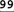

7.5. The Match Operator
$text =~ m/regex/
is the core of Perl regular-expression use. In Perl, a regular-expression match is an operator that takes two operands, a target string operand and a regex operand, and returns a value. How the match is carried out, and what kind of value is returned, depend on the context the match is used in (☞294), and other factors. The match operator is quite flexibleit can be used to test a regular expression against a string, to pluck data from a string, and even to parse a string part by part in conjunction with other match operators. While powerful, this flexibility can make mastering it more complex. Some areas of concern include:
The general form of a match is:
StringOperand =~ RegexOperand
There are various shorthand forms, and it's interesting to note that each part is optional in one shorthand form or another. We'll see examples of all forms throughout this section. 7.5.1. Match's Regex OperandThe regex operand can be a regex literal or a regex object. (Actually, it can be a string or any arbitrary expression, but there is little benefit to that.) If a regex literal is used, match modifiers may also be specified. 7.5.1.1. Using a regex literalThe regex operand is most often a regex literal within m/⋯/ or just /⋯/. The leading m is optional if the delimiters for the regex literal are forward slashes or question marks (delimiters of question marks are special, discussed in a bit). For consistency, I prefer to always use the m, even when it's not required. As described earlier, you can choose your own delimiters if the m is present (☞291). When using a regex literal, you can use any of the core modifiers described on page 292. The match operator also supports two additional modifiers, /g and /c, discussed in a bit. 7.5.1.2. Using a regex objectThe regex operand can also be a regex object, created with qr/⋯/. For example:
my $regex = qr/regex/;
You can use m/⋯/ with a regex object. As a special case, if the only thing within the "regex literal" is the interpolation of a regex object, it's exactly the same as using the regex object alone. This example's if can be written as:
if ($text =~ m/$regex/) {
This is convenient because it perhaps looks more familiar, and also allows you to use the /g modifier with a regex object. (You can use the other modifiers that m/⋯/ supports as well, but they're meaningless in this case because they can never override the modes locked in a regex object ☞304.) 7.5.1.3. The default regexIf no regex is given, such as with m// (or with m/$SomeVar/ where the variable $SomeVar is empty or undefined), Perl reuses the regular expression most recently used successfully within the enclosing dynamic scope. This used to be useful for efficiency reasons, but is now obsolete with the advent of regex objects (☞303). 7.5.1.4. Special match-once ?⋯?In addition to the special cases for the regex-literal delimiters described earlier, the match operator treats the question mark as a special delimiter. The use of a question mark as the delimiter (as with m?⋯?) enables a rather esoteric feature such that after the successfully m?⋯? matches once, it cannot match again until the function reset is called in the same package. Quoting from the Perl Version 1 manual page, this features was "a useful optimization when you only want to see the first occurrence of something in each of a set of files," but for whatever reason, I have never seen it used in modern Perl. The question mark delimiters are a special case like the forward slash delimiters, in that the m is optional: ?⋯? by itself is treated as m?⋯?. 7.5.2. Specifying the Match Target OperandThe normal way to indicate "this is the string to search" is using =~, as with $text =~ m/⋯/. Remember that =~ is not an assignment operator, nor is it a comparison operator. It is merely a funny-looking way of linking the match operator with one of its operands. (The notation was adapted from awk.) Since the whole "expr =~ m/⋯/" is an expression itself, you can use it wherever an expression is allowed. Some examples (each separated by a wavy line):
$text =~ m/⋯/; # Just do it, presumably, for the side effects.
-----------------------------------
if ($text =~ m/⋯/) {
# Do code if match is successful
7.5.2.1. The default targetIf the target string is the variable $_, you can omit the "$_ =~" parts altogether. In other words, the default target operand is $_. Something like
$text =~ m/regex/;
means "Apply regex to the text in $text, ignoring the return value but doing the side effects." If you forget the '~', the resulting
$text = m/regex/;
becomes "Apply regex to the text in $_, do the side effects, and return a true or false value that is then assigned to $text." In other words, the following are the same:
$text = m/regex/;
$text = ($_ =~ m/regex/);
Using the default target string can be convenient when combined with other constructs that have the same default (as many do). For example, this is a common idiom:
while (<>)
{
if (m/⋯/) {
In general, though, relying on default operands can make your code less approachable by less experienced programmers. 7.5.2.2. Negating the sense of the matchYou can also use !~ instead of =~ to logically negate the sense of the return value. (Return values and side effects are discussed soon, but with !~, the return value is always a simple true or false value.) The following are identical:
if ($text !~ m/⋯/)
if (not $text =~ m/⋯/)
unless ($text =~ m/⋯/)
Personally, I prefer the middle form. With any of them, the normal side effects, such as the setting of $1 and the like, still happen. !~ is merely a convenience in an "if this doesn't match" situation. 7.5.3. Different Uses of the Match OperatorYou can always use the match operator as if it returns a simple true/false indicating the success of the match, but there are ways you can get additional information about a successful match, and to work in conjunction with other match operators. How the match operator works depends primarily on the context in which it's used (☞294), and whether the /g modifier has been applied. 7.5.3.1. Normal "does this match?"scalar context without /gIn a scalar context, such as the test of an if, the match operator returns a simple true or false:
if ($target =~ m/⋯/) {
# ... processing after successful match ...
You can also assign the result to a scalar for inspection later:
my $success = $target =~ m/⋯/;
7.5.3.2. Normal "pluck data from a string"list context, without /gA list context without /g is the normal way to pluck information from a string. The return value is a list with an element for each set of capturing parentheses in the regex. A simple example is processing a date of the form 69/8/31, using:
my ($year, $month, $day) = $date =~ m{ ^ (\d+) / (\d+) / (\d+) $ }x;
The three matched numbers are then available in the three variables (and $1, $2, and $3 as well). There is one element in the return-value list for each set of capturing parentheses, or an empty list upon failure. It is possible for a set of capturing parentheses to not participate in the final success of a match. For example, one of the sets in m/(this)|(that)/ is guaranteed not to be part of the match. Such sets return the undefined value undef. If there are no sets of capturing parentheses to begin with, a successful list-context match without /g returns the list (1). A list context can be provided in a number of ways, including assigning the result to an array, as with:
my @parts = $text =~ m/^(\d+)-(\d+)-(\d+)$/;
If you're assigning to just one scalar variable, take care to provide a list context to the match if you want the captured parts instead of just a Boolean indicating the success. Compare the following tests:
my ($wo rd) = $text =~ m/(\w+)/;
my $success = $text =~ m/(\w+)/;
The parentheses around the variable in the first example cause its my to provide a list context to the assignment (in this case, to the match). The lack of parentheses in the second example provides a scalar context to the match, so $success merely gets a true/false result. This example shows a convenient idiom:
if ( my ($year, $month, $day) = $date =~ m { ^ (\d+) / (\d+) / (\d+) $}x
) {
# Process for when we have a match: $year and such are available
} else {
# here if no match ...
}
The match is in a list context (provided by the "my (⋯) ="), so the list of variables is assigned their respective $1, $2, etc., if the match is successful. However, once that's done, since the whole combination is in the scalar context provided by the if conditional, Perl must contort the list to a scalar. To do that, it takes the number of items in the list, which is conveniently zero if the match wasn't successful, and non-zero (i.e., true) if it was. 7.5.3.3. "Pluck all matches"list context, with the /g modifierThis useful construct returns a list of all text matched within capturing parentheses (or if there are no capturing parentheses, the text matched by the whole expression), not only for one match, as in the previous section, but for all matches in the string. A simple example is the following, to fetch all integers in a string:
my @nums = $text =~ m/\d+/g;
If $text contains an IP address like '64.156.215.24 0', @nums then receives four elements, '64', '156', '215', and '240'. Combined with other constructs, here's an easy way to turn an IP address into an eight-digit hexadecimal number such as '409cd7f0', which might be convenient for creating compact log files:
my $hex_ip = join '', map { sprintf("%02x", $_)
} $ip =~ m/\d+/g;
You can convert it back with a similar technique:
my $ip = join '.', map { hex($_) } $he x Rip =~ m/../g
As another example, to match all floating-point numbers on a line, you might use:
my @nums = $text =~ m/\d+(?:\.\d+)?;\.\d+/g;
The use of non-capturing parentheses here is very important, since adding capturing ones changes what is returned. Here's an example showing how one set of capturing parentheses can be useful:
my @Tags = $Html =~ m/<(\w+)/g;
This sets @Tags to the list of HTML tags, in order, found in $Html, assuming it contains no stray '<' characters. Here's an example with multiple sets of capturing parentheses: consider having the entire text of a Unix mailbox alias file in a single string, where logical lines look like:
alias Jeff jfriedl@regex.info
alias Perlbug perl5-porters@perl.org
alias Prez president@whitehouse.gov
To pluck an alias and full address from one of the logical lines, you can use m/^alias\s+(\S+)\s+(.+)/m (without /g). In a list context, this returns a list of two elements, such as ('Jeff', 'jfriedl@regex.info'). Now, to match all such sets, add /g. This returns a list like:
( 'Jeff', 'jfriedl@regex.info', 'Perlbug',
'perl5-porters@perl.org', 'Prez', 'president@whitehouse.gov' )
If the list happens to fit a key/value pair pattern as in this example, you can actually assign it directly to an associative array. After running
my %alias = $text =~ m/^alias\s+(\S+)\s+(.+)/mg;
you can access the full address of 'Jeff' with $alias{Jeff}. 7.5.4. Iterative Matching: Scalar Context, with /gA scalar-context m/⋯/g is a special construct quite different from the others. Like a normal m/⋯/, it does just one match, but like a list-context m /⋯/g, it pays attention to where previous matches occurred. Each time a scalar-context m/⋯/g is reached, such as in a loop, it finds the "next" match. If it fails, it resets the "current position," causing the next application to start again at the beginning of the string. Here's a simple example:
$text = "WOW! This is a SILLY test.";
$text =~ m/\b([ a -z]+\b)/g;
print "The first all-lowercase word: $1\n";
$text =~ m/\b([A-Z]+\b)/g;
print "The subsequent all-uppercase word: $1\n";
With both scalar matches using the /g modifier, it results in:
The first all-lowercase word: is
The subsequent all-uppercase word: SILLY
The two scalar-/g matches work together: the first sets the "current position" to just after the matched lowercase word, and the second picks up from there to find the first uppercase word that follows. The /g is required for either match to pay attention to the "current position," so if either didn't have /g, the second line would refer to 'WOW'. A scalar context /g match is quite convenient as the conditional of a while loop. Consider:
while ($ConfigData =~ m/ ^(\w+)=(.,)/mg) {
my($key, $value) = ($1, $2);
All matches are eventually found, but the body of the while loop is executed between the matches (well, after each match). Once an attempt fails, the result is false and the while loop finishes. Also, upon failure, the /g state is reset, which means that the next /g match starts over at the start of the string. Compare
while ($text =~ m/(\d+)/) { # dangerous!
print "found: $1\n";
}
and:
while ($text =~ m /(\d+)/g) {
print "found: $1\n";
}
The only difference is /g, but it's a huge difference. If $text contained, say, our earlier IP example, the second prints what we want:
found: 64
found: 156
found: 215
found: 240
The first, however, prints "found: 64" over and over, forever. Without the /g, the match is simply "find the first 7.5.4.1. The "current match location" and the pos() functionEvery string in Perl has associated with it a "current match location" at which the transmission first attempts the match. It's a property of the string, and not associated with any particular regular expression. When a string is created or modified, the "current match location" starts out at the beginning of the string, but when a /g match is successful, it's left at the location where the match ended. The next time a /g match is applied to the string, the match begins inspecting the string at that same "current match location." You have access to the target string's "current match location" via the pos (⋯) function. For example:
my $ip = "64.156.215.240";
while ($ip =~ m/(\d+)/g) {
printf "found '$1' ending at location %d\n", pos($ip);
}
This produces:
found '64' ending at location 2
found '156' ending at location 6
found '215' ending at location 10
found '240' ending at location 14
(Remember, string indices are zero-based, so "location 2" is just before the 3rd character into the string.) After a successful /g match, $+[0] (the first element of @+ ☞302) is the same as the pos of the target string. The default argument to the pos() function is the same default argument for the match operator: the $_ variable. 7.5.4.2. Pre-setting a string's posThe real power of pos() is that you can write to it, to tell the regex engine where to start the next match (if that next match uses /g, of course). For example, the web server logs I worked with at Yahoo!
were in a custom format containing 32 bytes of fixed-width data, followed by the page being requested, followed by other information. One way to pick out the page is to use
if ($logline =~ m/^.{32}(\S+)/) {
$RequestedPage = $1;
}
This brute-force method isn't elegant, and forces the regex engine to work to skip the first 32 bytes. That's less efficient and less clear than doing it explicitly ourself:
pos($logline) = 32; # The page starts at the 32nd character, so start the
next match there ...
if ($logline =~ m/(\S+)/g) {
$RequestedPage = $1;
}
This is better, but isn't quite the same. It has the regex start where we want it to start, but doesn't require a match at that position the way the original does. If for some reason the 32nd character can't be matched by 7.5.4.3. Using \G
pos($logline) = 32; # The page starts at the 32nd character, so start the next
match there...
if ($logline =~ m/\G(\S+)/g)
{
$RequestedPage = $1;
}
There are discussions of Note that Perl's
7.5.4.4. "Tag-team" matching with /gcNormally, a failing m/⋯/g match attempt resets the target string's pos to the start of the string, but adding the /c modifier to /g introduces a special twist, causing a failing match to not reset the target's pos. (/c is never used without /g, so I tend to refer to it as /gc.) m/⋯/gc is most commonly used in conjunction with
while (not $html =~ m/\G\z/gc) # While we haven't worked to the end...
{
if ($html =~ m/\G( <[^>]+> )/xgc) { print "TAG: $1\n" }
elsif ($html =~ m/\G( &\w+; )/xgc) { print "NAMED ENTITY: $1\n" }
elsif ($html =~ m/\G( &\#\d+; )/xgc) { print "NUMERIC ENTITY: $1\n" }
elsif ($html =~ m/\G( [^<>&\n]+ )/xgc) { print "TEXT: $1\n" }
elsif ($html =~ m/\G \n /xgc) { print "NEWLINE\n" }
elsif ($html =~ m/\G( . )/xgc) { print "ILLEGAL CHAR: $1\n" }
else {
die "$0: oops, this shouldn't happen!";
}
}
The bold part of each regex matches one type of HTML construct. Each is checked in turn starting from the current position (due to /gc), but can match only at the current position (due to The loop ends when m/\G\z/gc is able to match, which is when the current position ( An important aspect of this approach is that one of the tests must match each time through the loop. If one doesn't (and if we don't abort), there would be an infinite loop, since nothing would be advancing or resetting $html's pos. This example has a final else clause that will never be invoked as the program stands now, but if we were to edit the program (as we will soon), we could perhaps introduce a mistake, so keeping the else clause is prudent. As it is now, if the data contains a sequence we haven't planned for (such as '<>'), it generates one warning message per unexpected character. Another important aspect of this approach is the ordering of the checks, such as the placement of
$html =~ m/\G ( <script[^>]*>.*?</script>)/xgcsi
(Wow, we've used five modifiers!)
To work properly, this must be inserted into the program before the currently-first There's a somewhat more advanced example of /gc in Chapter 3 (☞132). 7.5.4.5. Pos-related summaryHere's a summary of how the match operator interacts with the target string's pos:
Also, modifying a string in any way causes its pos to be reset to undef (which is the initial value, meaning the start of the string). 7.5.5. The Match Operator's Environmental RelationsThe following sections summarize what we've seen about how the match operator influences the Perl environment, and vice versa. 7.5.5.1. The match operator's side effectsOften, the side effects of a successful match are more important than the actual return value. In fact, it is quite common to use the match operator in a void context (i.e., in such a way that the return value isn't even inspected), just to obtain the side effects. (In such a case, it acts as if given a scalar context.) The following summarizes the side effects of a successful match attempt:
Again, these side effects occur only with a match that is successfulan unsuccessful match attempt has no influence on them. However, the following side effects happen with any match attempt:
7.5.5.2. Outside influences on the match operatorWhat a match operator does is influenced by more than just its operands and modifiers. This list summarizes the outside influences on the match operator:
7.5.5.3. Keeping your mind in context (and context in mind)Before leaving the match operator, I'll put a question to you. Particularly when changing among the while, if, and foreach control constructs, you really need to keep your wits about you. What do you expect the following to print?
while ("Larry Curly Moe" =~ m/\w+/g) {
print "WHILE stooge is $&.\n";
}
print "\n";
if ("Larry Curly Moe" =~ m/\w+/g) {
print "IF stooge is $&.\n";
}
print "\n";
foreach ("Larry Curly Moe" =~ m/\w+/g) {
print "FOREACH stooge is $&.\n";
}
It's a bit tricky. ❖ Turn the page to check your answer. 7.5.6. The Substitution OperatorPerl's substitution operator s/⋯/⋯/ extends a match to a full match-and-replace. The general form is:
$text =~ s/regex/replacement/modifiers
In short, the text first matched by the regex operand is replaced by the value of the replacement operand. If the /g modifier is used, the regex is repeatedly applied to the text following the match, with additional matched text replaced as well. As with the match operator, the target text operand and the connecting =~ are optional if the target is the variable $_. But unlike the match operator's m, the substitution's s is never optional. We've seen that the match operator is fairly complexhow it works, and what it returns, is dependent upon the context it's called in, the target string's pos, and the modifiers used. In contrast, the substitution operator is simple: it always returns the same information (an indication of the number of substitutions done), and the modifiers that influence how it works are easy to understand. You can use any of the core modifiers described on page 292, but the substitution operator also supports two additional modifiers: /g and, described in a bit, /e. 7.5.7. The Replacement OperandWith the normal s/⋯/⋯/, the replacement operand immediately follows the regex operand, using a total of three instances of the delimiter rather than the two of m/⋯/. If the regex uses balanced delimiters (such as <⋯>), the replacement operand then has its own independent pair of delimiters (yielding a total of four). For example, s{⋯}{⋯} and s[⋯]/⋯/ and s<⋯>'⋯' are all valid. In such cases, the two sets may be separated by whitespace, and if so, by comments as well. Balanced delimiters are commonly used with /x or /e:
$text =~ s{
...some big regex here, with lots of comments and such...
} {
...a Perl code snippet to be evaluated to produce the replacement text...
}ex;
Take care to separate in your mind the regex and replacement operands. The regex operand is parsed in a special regex-specific way, with its own set of special delimiters (☞291). The replacement operand is parsed and evaluated as a normal double-quoted string. The evaluation happens after the match (and with /g, after each match), so $1 and the like are available to refer to the proper match slice. There are two situations where the replacement operand is not parsed as a double-quoted string:
7.5.8. The /e ModifierThe /e modifier causes the replacement operand to be evaluated as a Perl code snippet, as if with eval {⋯}. The code snippet's syntax is checked to ensure it's valid Perl when the script is loaded, but the code is evaluated afresh after each match. After each match, the replacement operand is evaluated in a scalar context, and the result of the code is used as the replacement. Here's a simple example:
$text =~ s/-time-/localtime/ge;
This replaces occurrences of Since the evaluation is done after each match, you can refer to the text just matched with the after-match variables like $1. For example, special characters that might not otherwise be allowed in a URL can be encoded using % followed by their two-digit hexadecimal representation. To encode all non-alphanumerics this way, you can use
$url =~ s/([^a-zA- Z0-9])/sprintf('%%%02x', ord($1))/ge;
and to decode back to the original, you can use:
$url =~ s/%([0-9a-f][0- 9a-f])/pack("C", hex($1))/ige;
In short, sprintf('%%%02x', ord(character)) converts characters to their numeric URL representation, while pack("C", value) does the opposite; consult your favorite Perl documentation for more information. 7.5.8.1. Multiple uses of /eNormally, repeating a modifier with an operator doesn't hurt (except perhaps to confuse the reader), but repeating the /e modifier actually changes how the replacement is done. Normally, the replacement operand is evaluated once, but if more than one 'e' is given, the results of the evaluation are themselves evaluated as Perl, over and over, for as many extra 'e' as are provided. This is perhaps useful mostly for an Obfuscated Perl Contest. Still, it can be useful. Consider interpolating variables into a string manually (such as if the string is read from a configuration file). That is, you have a string that looks like '⋯ $var ⋯' and you want to replace the substring '$var' with the value of the variable $var. A simple approach uses:
$data =~ s/(\$[a-zA-ZR]\w+)/$1/eeg;
Without any /e, this would simply replace the matched '$var' with itself, which is not very useful. With one /e, it evaluates the code $1, yielding '$var', which again, effectively replaces the matched text with itself (which is again, not very useful). But with two /e, that '$var' is itself evaluated, yielding its contents. Thus, this mimics the interpolation of variables. 7.5.8.2. Context and Return ValueRecall that the match operator returns different values based upon the particular combination of context and /g. The substitution operator, however, has none of these complexitiesit always returns either the number of substitutions performed or, if none were done, an empty string. Conveniently, when interpreted as a Boolean (such as for the conditional of an if), the return value is taken as true if any substitutions are done, false if not. 7.5.9. The Split OperatorThe multifaceted split operator (often called a function in casual conversation) is commonly used as the converse of a list-context m/⋯/g (☞311). The latter returns text matched by the regex, while a split with the same regex returns text separated by matches. The normal match $text =~ m/:/g applied against a $text of 'IO.SYS:225558:95-10-03:-a-sh:optional', returns the four-element list
(':', ':', ':', ':' )
which doesn't seem useful. On the other hand, split(/:/, $text) returns the five-element list:
('IO.SYS', '225558', '95-10-03', '-a-sh', 'optional' )
Both examples reflect that That example splits the target string on a single character, but you can split on any arbitrary regular expression. For example,
@Paragraphs = split(m/\s*<p>\s*/i, $html);
splits the HTML in $html into chunks, at <p> or <P>, surrounded by optional whitespace. You can even split on locations, as with
@Lines = split(m/^/m, $lines);
to break a string into its logical lines. In its most simple form with simple data like this, split is as easy to understand as it is useful. However, there are many options, special cases, and special situations that complicate things. Before getting into the details, let me show two particularly useful special cases:
These and other special cases are discussed a bit later, but first, the next sections go over the basics. 7.5.10. Basic Splitsplit is an operator that looks like a function, and takes up to three operands:
split(match operand, target string, chunk-limit operand)
The parentheses are optional. Default values (discussed later in this section) are provided for operands left off the end. split is always used in a list context. Common usage patterns include:
($var1, $var2, $var3, ⋯) = split(⋯);
-----------------------------------
@array = split(⋯);
-----------------------------------
for my $item (split(⋯)) {
7.5.10.1. Basic match operandThe match operand has several special-case situations, but it is normally the same as the regex operand of the match operator. That means that you can use /⋯/ and m{⋯} and the like, a regex object, or any expression that can evaluate to a string. Only the core modifiers described on page 292 are supported. If you need parentheses for grouping, be sure to use the 7.5.10.2. Target string operandThe target string is inspected, but is never modified by split. The content of $_ is the default if no target string is provided. 7.5.10.3. Basic chunk-limit operandIn its primary role, the chunk-limit operand specifies a limit to the number of chunks that split partitions the string into. With the sample data from the first example, split(/:/, $text, 3) returns:
( 'IO. SYS', '225558', '95-10-03:-a-sh:optional' )
This shows that split stopped after /:/ matched twice, resulting in the requested three-chunk partition. It could have matched additional times, but that's irrelevant because of this example's chunk limit. The limit is an upper bound, so no more than that many elements will ever be returned (unless the regex has capturing parentheses, which is covered in a later section). You may still get fewer elements than the chunk limit; if the data can't be partitioned enough to begin with, nothing extra is produced to "fill the count." With our example data, split(/:/, $text, ) still returns only a five-element list. However, there is an important difference between split(/:/, $text) and split(/:/, $text,) which does not manifest itself with this example keep this in mind when the details are discussed later. Remember that the chunk-limit operand refers to the chunks between the matches, not to the number of matches themselves. If the limit were to refer to the matches themselves, the previous example with a limit of three would produce
('IO.SYS', '225558 ', '95-10-03', '-a-sh:optional' )
which is not what actually happens. One comment on efficiency: let's say you intended to fetch only the first few fields, such as with:
($filename, $size, $date) = split(/:/, $text);
As a performance enhancement, Perl stops splitting after the fields you've requested have been filled. It does this by automatically providing a chunk limit of one more than the number of items in the list. 7.5.10.4. Advanced splitsplit can be simple to use, as with the examples we've seen so far, but it has three special issues that can make it somewhat complex in practice:
The next sections cover these in detail. 7.5.11. Returning Empty ElementsThe basic premise of split is that it returns the text separated by matches, but there are times when that returned text is an empty string (a string of length zero, e.g., ""). For example, consider
This returns
("12", "34", "", "78")
The regex 7.5.11.1. Trailing empty elementsNormally, trailing empty elements are not returned. For example,
sets @nums to the same four elements
("12", "34", "", "78")
as the previous example, even though the regex was able to match a few extra times at the end of the string. By default, split does not return empty elements at the end of the list. However, you can have split return all trailing elements by using an appropriate chunk-limit operand ... 7.5.11.2. The chunk-limit operand's second jobIn addition to possibly limiting the number of chunks, any non-zero chunk-limit operand also preserves trailing empty items. (A chunk limit given as zero is exactly the same as if no chunk limit is given at all.) If you don't want to limit the number of chunks returned, but do want to leave trailing empty elements intact, simply choose a very large limit. Or, better yet, use -1, because a negative chunk limit is taken as an arbitrarily large limit: split(/:/, $text, -1) returns all elements, including any trailing empty ones. At the other extreme, if you want to remove all empty items, you could put grep {length}before the split. This use of grep lets pass only list elements with non-zero lengths (in other words, elements that aren't empty):
my @NonEmpty = grep { length } split(/:/, $text);
7.5.11.3. Special matches at the ends of the stringA match at the very beginning normally produces an empty element:
That sets @nums to:
("", "12", "34", "", "78")
The initial empty element reflects the fact that the regex matched at the beginning of the string. However, as a special case, if the regex doesn't actually match any text when it matches at the start or end of the string, leading and/or trailing empty elements are not produced. A simple example is split(/\b/, "a simple test"), which can match at the six marked locations in ' 7.5.12. Split's Special Regex Operandssplit's match operand is normally a regex literal or a regex object, as with the match operator, but there are some special cases:
7.5.12.1. Split has no side effectsNote that a split match operand often looks like a match operator, but it has none of the side effects of one. The use of a regex with split doesn't affect the default regex for later match or substitution operators. The variables $&, $', $1, and so on are not set or otherwise affected by a split. A split is completely isolated from the rest of the program with respect to side effects.[
7.5.13. Split's Match Operand with Capturing ParenthesesCapturing parentheses change the whole face of split. When they are used, the returned list has additional, independent elements interjected for the item(s) captured by the parentheses. This means that some or all text normally not returned by split is now included in the returned list. For example, as part of HTML processing, split(/(<[^>]*>)/) turns
⋯•and• <B>very• <FONT•color=red>very</FONT>•much</B>•effort⋯
into:
( '...•and•', '<B>','very•', '<FONT•color=red>',
'very', '</FONT>', '•much', '</B>', '•effort...' )
With the capturing parentheses removed, split(/<[^>]*>/) returns:
( '...•and• ', 'very•', 'very', '•much', '•effort...' )
The added elements do not count against a chunk limit. (The chunk limit limits the chunks that the original string is partitioned into, not the number of elements returned.) If there are multiple sets of capturing parentheses, multiple items are added to the list with each match. If there are sets of capturing parentheses that don't contribute to a match, undef elements are inserted for them. |
 if ($text =~
if ($text =~  (\d+)
(\d+) in $text," which is '64' no matter how many times it's checked. Adding the /g to the scalar-context match turns it into "find the
in $text," which is '64' no matter how many times it's checked. Adding the /g to the scalar-context match turns it into "find the  ]
] a
a